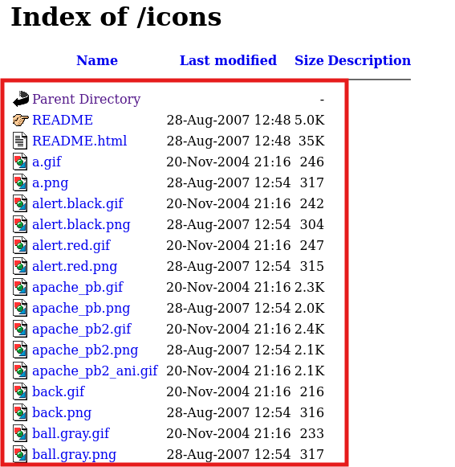

디렉터리 인덱싱 취약점이란? = 디렉터리 리스닝
- 웹 서버의 잘못된 설정으로 웹 서버디렉터리의 파일들이 노출되는 취약점이다.
과거 국가정보원 8대 홈페이지 취약점으로 선정되었다.
디렉터리 목록을 출력해주는 기능
저번에 nikto 명령어로 찾아낸 디렉터리 인덱싱을 접속해 보겠다.

이와 같이 목록이 표시됨 지금은 png 사진 같은 목록이지만 중요한 정보 DB정보나 공격에 활용될만한 소스코드 발견시 아주 위험한 취약점이 될 수 있음